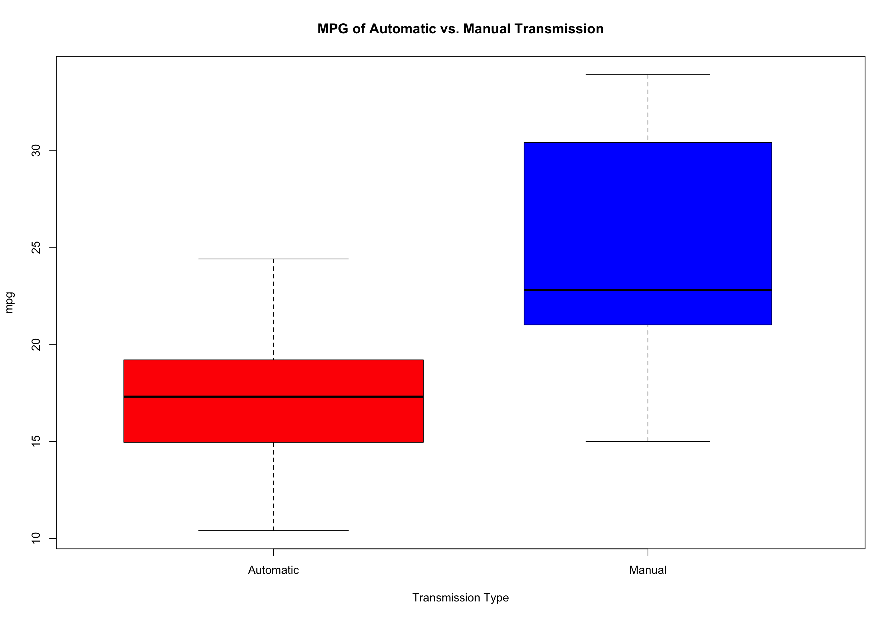
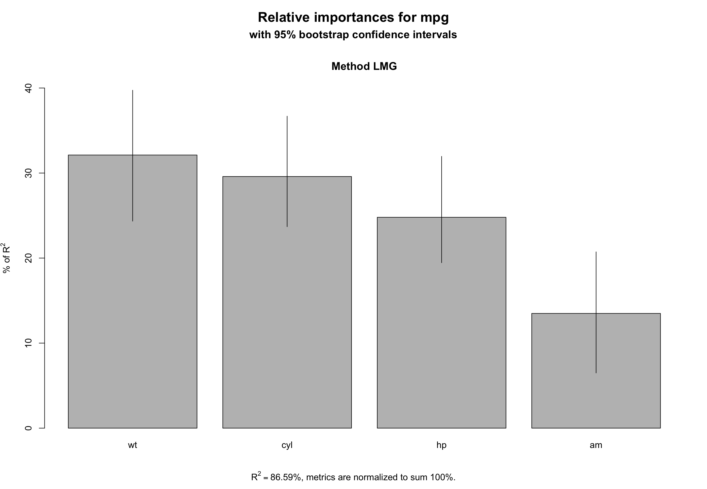

From this analysis we found out that manual transmission are better in per gallon than automatic transmission. With 95% confidence, we estimate that a the change from automatic to manual transmission results in a 2.2 to 6.39 increase in miles per gallon for the cars. A linear regression model determined by ANOVA explained that 84% of the variation in mpg. We have conclude that manual transmission are better than automatic in terms of Miles per gallon
You work for Motor Trend, a magazine about the automobile industry. Looking at a data set of a collection of cars, they are interested in exploring the relationship between a set of variables and miles per gallon (MPG) (outcome). They are particularly interested in the following two questions:
mtcars
The data was extracted from the 1974 Motor Trend US magazine, and comprises fuel consumption and 10 aspects of automobile design and performance for 32 automobiles (1973-74 models).
A data frame with 32 observations on 11 variables.
| Col | label | Description |
|---|---|---|
| [, 1] | mpg | Miles/(US) gallon |
| [, 2] | cyl | Number of cylinders |
| [, 3] | disp | Displacement (cu.in.) |
| [, 4] | hp | Gross horsepower |
| [, 5] | drat | Rear axle ratio |
| [, 6] | wt | Weight (1000 lbs) |
| [, 7] | qsec | 1/4 mile time |
| [, 8] | vs | V/S |
| [, 9] | am | Transmission (0 = automatic, 1 = manual) |
| [,10] | gear | Number of forward gears |
| [,11] | carb | Number of carburetors |
We will use gear, vs, carb, cyl and am for the analysis with proper factor and numeric. Separating Automatic and Manual Transmission.
We display a boxplot to show that there is a difference between Automatic and Manual Transmission with MPG. From the plot we can clearly see that there is an increase in MPG with manual transmission.

This plot reveals that the difference between the means illustrated earlier has one important cause: the weight is correlated with the number of miles per galleon and the cars with automatic transmission are on average lighter than the cars with manual transmission.
The red represent automatic and blue represent manual transmission

We see there are correlations between these variables showing significantly against each other.

We will use simple linear regression and multivariate regression analysis to build the regression model for this dataset.
Use mpg as the dependent variable and am as the independent variable to fit a linear regression.
##
## Call:
## lm(formula = mpg ~ am, data = mtcars)
##
## Residuals:
## Min 1Q Median 3Q Max
## -9.3923 -3.0923 -0.2974 3.2439 9.5077
##
## Coefficients:
## Estimate Std. Error t value Pr(>|t|)
## (Intercept) 17.147 1.125 15.247 1.13e-15 ***
## am 7.245 1.764 4.106 0.000285 ***
## ---
## Signif. codes: 0 '***' 0.001 '**' 0.01 '*' 0.05 '.' 0.1 ' ' 1
##
## Residual standard error: 4.902 on 30 degrees of freedom
## Multiple R-squared: 0.3598, Adjusted R-squared: 0.3385
## F-statistic: 16.86 on 1 and 30 DF, p-value: 0.000285
The following step function will find the best model.
##
## Call:
## lm(formula = mpg ~ cyl + hp + wt + am, data = mtcars)
##
## Residuals:
## Min 1Q Median 3Q Max
## -3.9387 -1.2560 -0.4013 1.1253 5.0513
##
## Coefficients:
## Estimate Std. Error t value Pr(>|t|)
## (Intercept) 33.70832 2.60489 12.940 7.73e-13 ***
## cyl6 -3.03134 1.40728 -2.154 0.04068 *
## cyl8 -2.16368 2.28425 -0.947 0.35225
## hp -0.03211 0.01369 -2.345 0.02693 *
## wt -2.49683 0.88559 -2.819 0.00908 **
## am 1.80921 1.39630 1.296 0.20646
## ---
## Signif. codes: 0 '***' 0.001 '**' 0.01 '*' 0.05 '.' 0.1 ' ' 1
##
## Residual standard error: 2.41 on 26 degrees of freedom
## Multiple R-squared: 0.8659, Adjusted R-squared: 0.8401
## F-statistic: 33.57 on 5 and 26 DF, p-value: 1.506e-10
This model explains 84% of the variance in miles per gallon (mpg). Moreover, we see that wt and qsec did indeed confound the relationship between am and mpg (mostly wt). Now when we read the coefficient for am, we say that, on average, manual transmission cars have 2.94 MPGs more than automatic transmission cars. However this effect is much lower than when we did not adjust for weight and qsec.
## Analysis of Variance Table
##
## Model 1: mpg ~ am
## Model 2: mpg ~ am + wt + qsec
## Res.Df RSS Df Sum of Sq F Pr(>F)
## 1 30 720.90
## 2 28 169.29 2 551.61 45.618 1.55e-09 ***
## ---
## Signif. codes: 0 '***' 0.001 '**' 0.01 '*' 0.05 '.' 0.1 ' ' 1
##
## Call:
## lm(formula = mpg ~ am + wt + qsec, data = mtcars)
##
## Residuals:
## Min 1Q Median 3Q Max
## -3.4811 -1.5555 -0.7257 1.4110 4.6610
##
## Coefficients:
## Estimate Std. Error t value Pr(>|t|)
## (Intercept) 9.6178 6.9596 1.382 0.177915
## am 2.9358 1.4109 2.081 0.046716 *
## wt -3.9165 0.7112 -5.507 6.95e-06 ***
## qsec 1.2259 0.2887 4.247 0.000216 ***
## ---
## Signif. codes: 0 '***' 0.001 '**' 0.01 '*' 0.05 '.' 0.1 ' ' 1
##
## Residual standard error: 2.459 on 28 degrees of freedom
## Multiple R-squared: 0.8497, Adjusted R-squared: 0.8336
## F-statistic: 52.75 on 3 and 28 DF, p-value: 1.21e-11
Residual plot will check for non-normality and examine any heteroskedacity between the fitted and residual values.

This will interpret the importance of variables This will show that Automatic Transmission is the least important among these variables around 14%.
##
## Call:
## lm(formula = mpg ~ cyl + hp + wt + am, data = mtcars)
##
## Residuals:
## Min 1Q Median 3Q Max
## -3.9387 -1.2560 -0.4013 1.1253 5.0513
##
## Coefficients:
## Estimate Std. Error t value Pr(>|t|)
## (Intercept) 33.70832 2.60489 12.940 7.73e-13 ***
## cyl6 -3.03134 1.40728 -2.154 0.04068 *
## cyl8 -2.16368 2.28425 -0.947 0.35225
## hp -0.03211 0.01369 -2.345 0.02693 *
## wt -2.49683 0.88559 -2.819 0.00908 **
## am 1.80921 1.39630 1.296 0.20646
## ---
## Signif. codes: 0 '***' 0.001 '**' 0.01 '*' 0.05 '.' 0.1 ' ' 1
##
## Residual standard error: 2.41 on 26 degrees of freedom
## Multiple R-squared: 0.8659, Adjusted R-squared: 0.8401
## F-statistic: 33.57 on 5 and 26 DF, p-value: 1.506e-10

With 95% confidence, we estimate that a the change from automatic to manual transmission results in a 2.2 to 6.39 increase in miles per gallon for the cars. There is also a difference in mgp with transmission type. Therefore in conclusion, the manual transmission is better than automatic transmission for mpg.
## Estimate Std. Error t value Pr(>|t|)
## (Intercept) 23.87913244 20.06582026 1.19004018 0.25252548
## cyl6 -2.64869528 3.04089041 -0.87102622 0.39746642
## cyl8 -0.33616298 7.15953951 -0.04695316 0.96317000
## disp 0.03554632 0.03189920 1.11433290 0.28267339
## hp -0.07050683 0.03942556 -1.78835344 0.09393155
## drat 1.18283018 2.48348458 0.47627845 0.64073922
## wt -4.52977584 2.53874584 -1.78425732 0.09461859
## qsec 0.36784482 0.93539569 0.39325050 0.69966720
## vs1 1.93085054 2.87125777 0.67247551 0.51150791
## am 1.21211570 3.21354514 0.37718957 0.71131573
## gear4 1.11435494 3.79951726 0.29328856 0.77332027
## gear5 2.52839599 3.73635801 0.67670068 0.50889747
## carb2 -0.97935432 2.31797446 -0.42250436 0.67865093
## carb3 2.99963875 4.29354611 0.69863900 0.49546781
## carb4 1.09142288 4.44961992 0.24528452 0.80956031
## carb6 4.47756921 6.38406242 0.70136677 0.49381268
## carb8 7.25041126 8.36056638 0.86721532 0.39948495
## Estimate Std. Error t value Pr(>|t|)
## wt -3.185455 0.4827586 -6.598442 3.128844e-07
## qsec 1.599823 0.1021276 15.664944 1.091522e-15
## am 4.299519 1.0241147 4.198279 2.329423e-04
## [1] 2.204969 6.394069